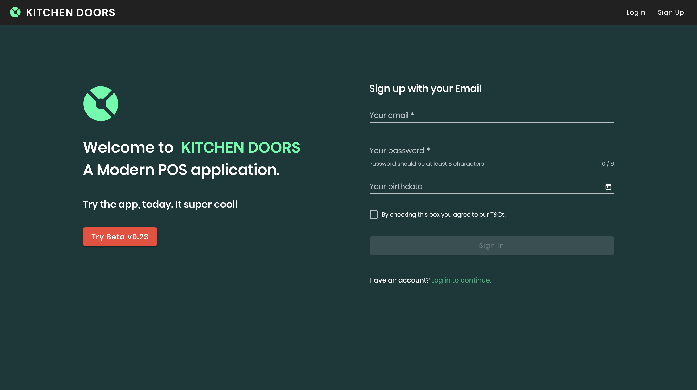
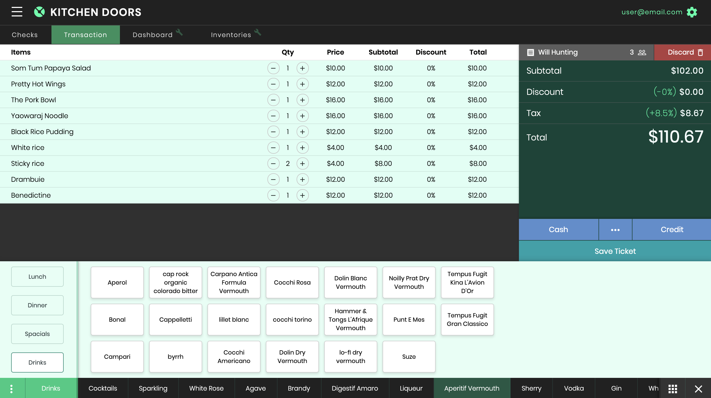
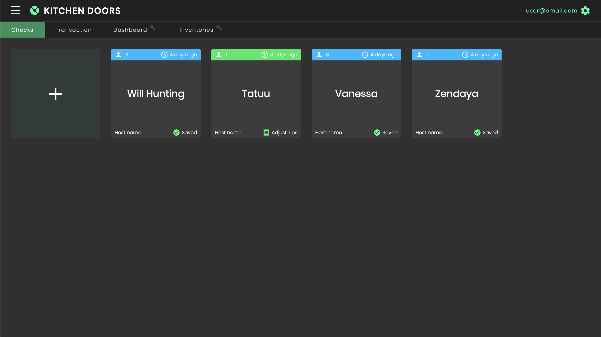
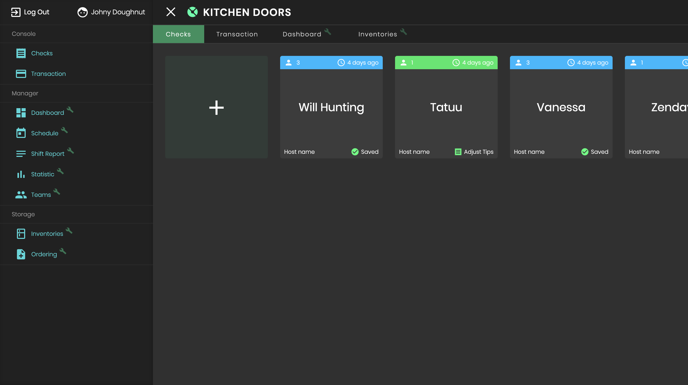
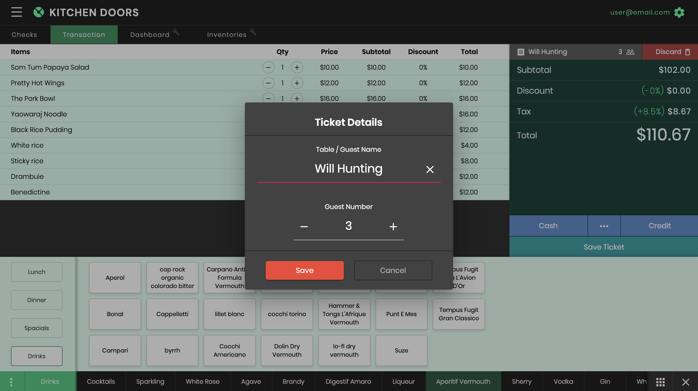
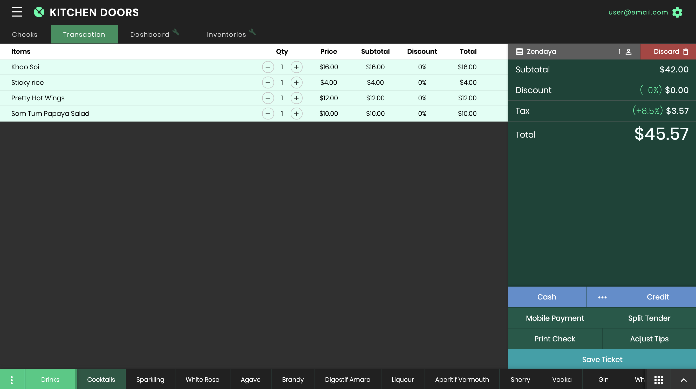

KITCHEN DOORS
Front End Development
Product Design
UI Design
Product Design
UI Design
HTML, CSS, TypeScript
Angular/RxJS
AngularFire, Firebase
Angular/RxJS
AngularFire, Firebase

About project
Kitchen doors is a serverless POS (Point of Sale) web application for small restaurants. Its supported features, including checking interface, inventories tracking, and shift report. With Google's real-time database, Kitchen Doors can send and receive the data in a fraction of time, provide a better experience, and enhancing the restaurant’s work-flow in a fast-paced environment.

Technologies
The Kitchen Doors's prototype was built using an MVC architecture framework, Angular, alongside with its eco-system libraries; AngularFire and Firebase.
Deployed on Netlify
Deployed on Netlify



